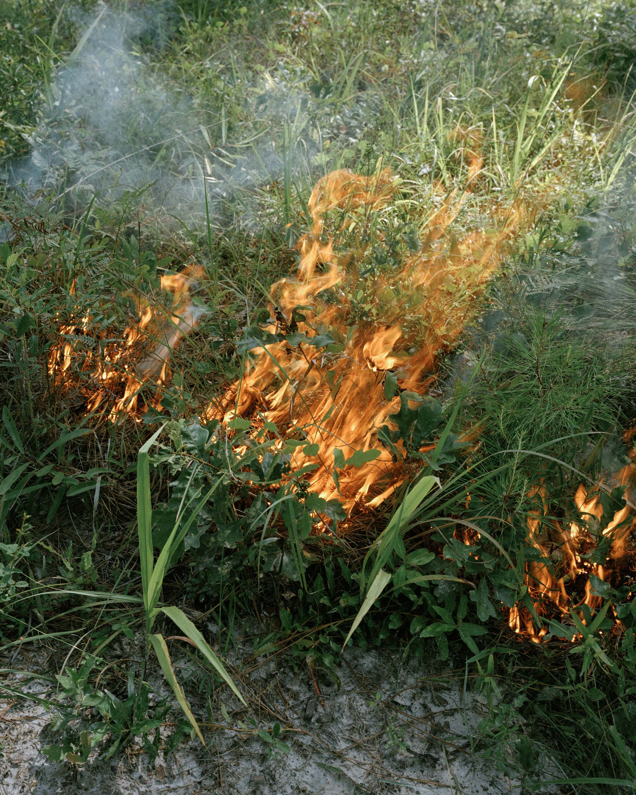

Archival pigment print. 2023. 16x20"
Lindsey Kennedy is a photographer and MFA candidate at the University of Georgia. Her work uses analog photographic processes to explore the relationship between humans and the natural environment. She holds a BA in Political Science and Gender Studies from the University of Wisconsin-Madison.
Lindsey Kennedy is a photographer and MFA candidate at the University of Georgia. Her work uses analog photographic processes to explore the relationship between humans and the natural environment. She holds a BA in Political Science and Gender Studies from the University of Wisconsin-Madison.